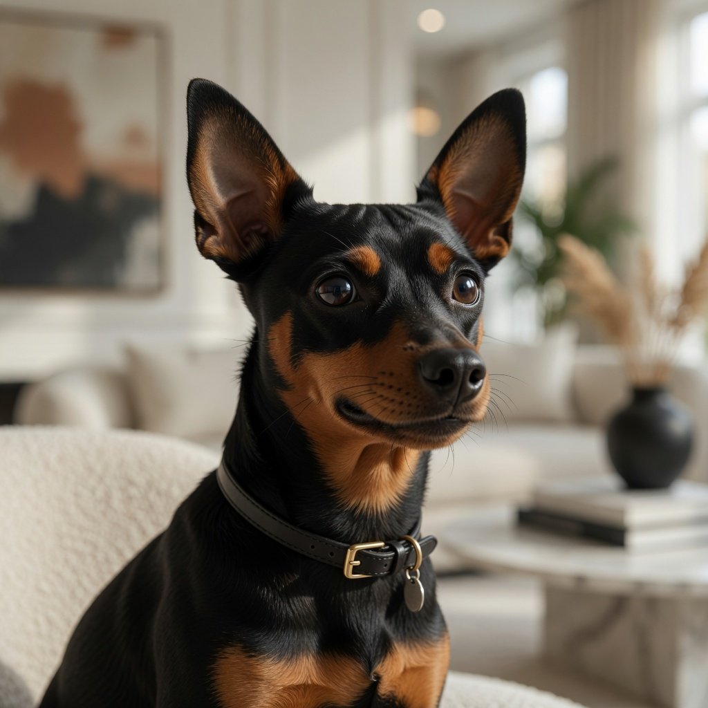
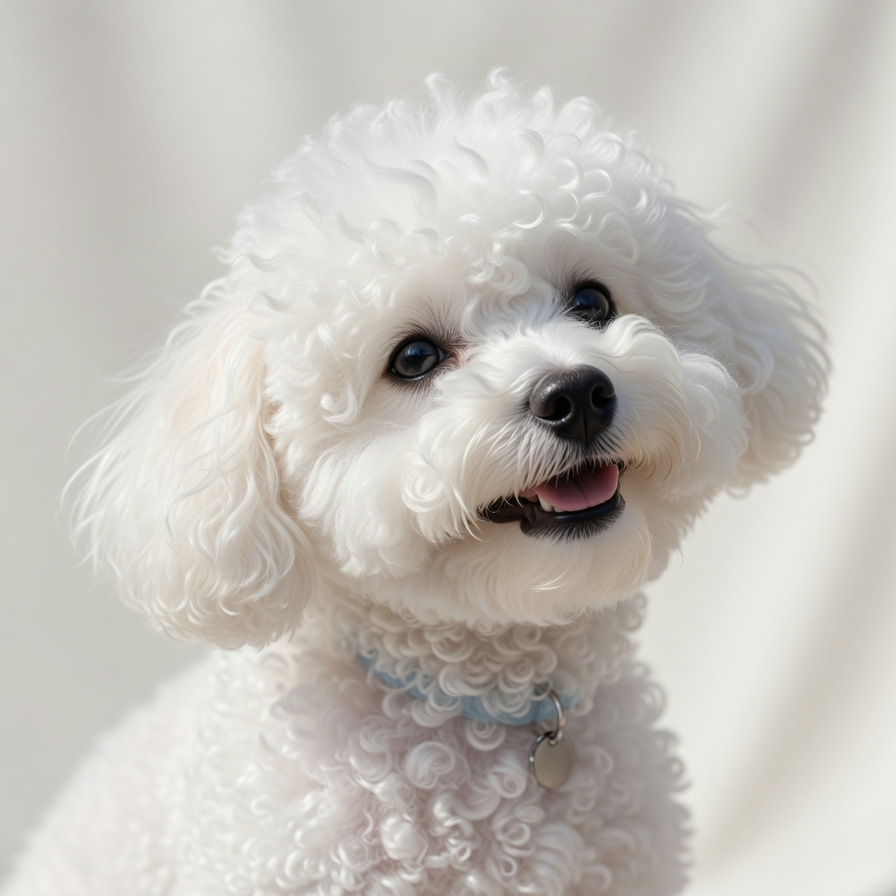

Foco em cães pequenos
Não é conselho genérico para qualquer cachorro.
Selo Zero Odor Canino
Em 7 dias, você identifica a causa certa e reduz o odor forte com uma rotina simples em casa — feita para cães pequenos.
Você escova, testa petisco, compra spray e o cheiro volta. Isso acontece porque muita gente trata só o sintoma e ignora a rotina que piora o problema. O Selo mostra o que observar, o que cortar e o que ajustar para o hálito melhorar de forma visível.
Quero organizar a rotina do meu cão agoraR$ 37 · ou 4x de R$ 9,25 · acesso imediato
Escovar e passar spray resolve por horas, mas não mexe no que mantém o odor vivo. O sistema organiza a rotina, aponta a causa provável e te diz o que ajustar primeiro.

Não é conselho genérico para qualquer cachorro.
Para você não perder tempo no erro nem no produto aleatório.
Não é uma lista bagunçada de ideias soltas da internet.
Para manter o básico sem complicar a casa.
Se você se identificou, está pronto para parar de adivinhar e começar a agir com clareza.
Causas mais comuns do mau hálito em cães pequenos.
Onde a rotina pode estar piorando o odor sem você perceber.
As mudanças que mais importam antes do excesso de coisas.

Sequência diária simples para consolidar os ajustes.

Lista prática para não esquecer o que importa.
Ao final, você terá uma rotina clara para reduzir os principais causadores do mau hálito.
Você para de atacar só o sintoma e enxerga a rotina que mantém o odor.
Sabe o que fazer, em que ordem, sem inventar moda.
Acaba a sensação de fazer de tudo e continuar sentindo cheiro ruim de perto.
Ajustes práticos sem compra cara toda semana.
Menos preocupação com o cheiro no colo, no sofá e perto das pessoas.
Você vira o tutor que entende a rotina do próprio cão.
“Eu já tinha tentado spray e escovação toda semana. Com o plano, percebi que o problema estava na rotina, não só na boca.”
“Parecia que eu estava enxugando gelo. O checklist deixou claro o que observar primeiro.”
“O melhor foi parar de comprar coisa aleatória. Agora eu sei o que faz sentido testar.”
“O guia foi direto. Em poucos dias a casa já parecia outra porque eu ajustei o básico certo.”
Guia prático + checklist diário + plano de 14 dias para reduzir o odor em casa.
ou 4x de R$ 9,25
Menos que dois pacotes de petiscos premium que não resolveram o problema.
Lista curta do que fazer em cada dia — remove a bagunça da execução.
Triagem rápida das causas mais prováveis em cães pequenos.
Sequência prática sem sobrecarregar a rotina.
Quando o cheiro pode pedir avaliação veterinária.
Pagamento seguro · acesso digital imediato
Se em 7 dias você não conseguir organizar uma rotina prática para reduzir os principais causadores do odor, pode pedir a devolução do valor. Sem complicação.
Pode. O cheiro nem sempre vem só da ração. A rotina, a higiene, a água, os petiscos e hábitos do dia a dia podem manter o odor forte.
Serve justamente por isso. O guia foi feito para quem já tentou apagar o cheiro sem entender a causa principal.
Não. A proposta é montar uma rotina doméstica de baixo custo, com ajustes práticos e fáceis de manter.
Muita gente percebe melhora ao corrigir os pontos mais óbvios nos primeiros dias. O plano trabalha 14 dias para consolidar o processo.
O material ajuda na triagem inicial, mas não substitui avaliação veterinária quando há sinais de alerta, dor, sangramento ou piora persistente.
Tem passo a passo: ebook, checklist diário e plano de 14 dias para aplicar sem ficar adivinhando.
Continuar testando coisas aleatórias — ou aplicar um plano direto para enxergar melhora de verdade.
Seu cão não precisa viver com cheiro forte todo dia. Pare de tapar o cheiro. Comece a cortar a causa.
Quero o plano que organiza o hálito do meu cãoR$ 37 · garantia 7 dias · acesso imediato